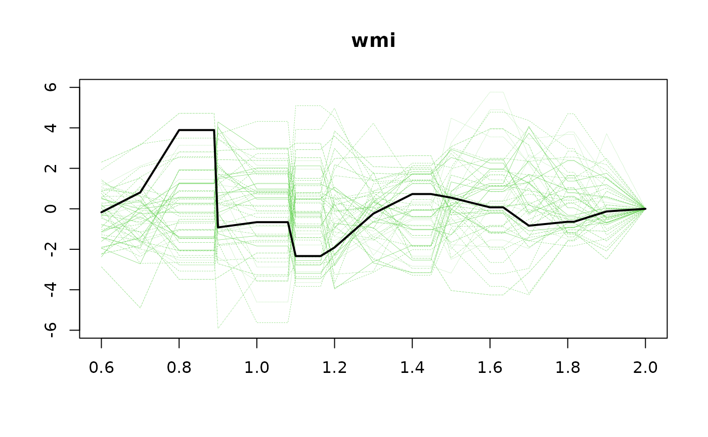
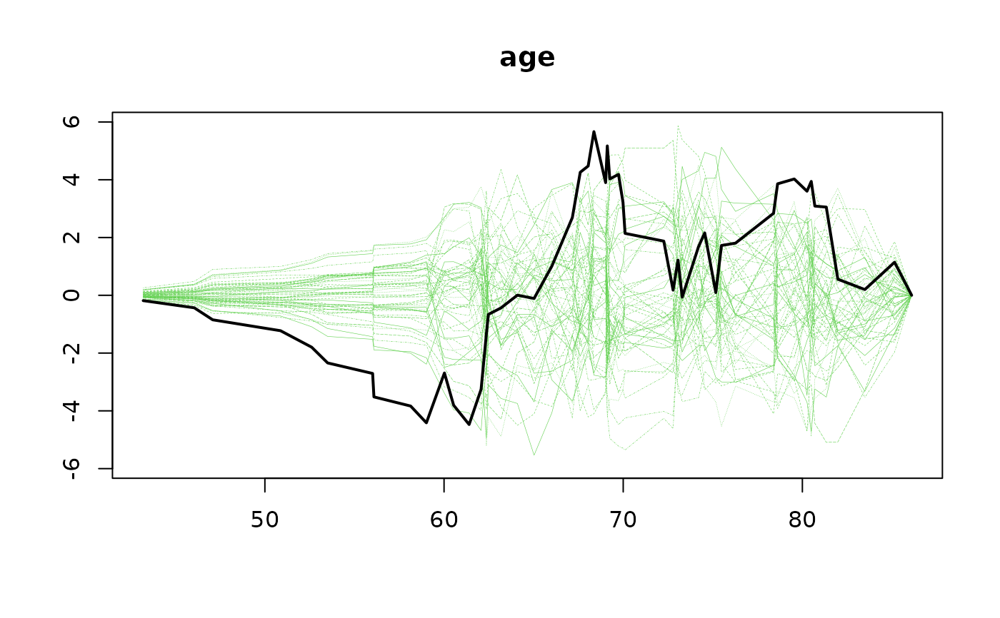

Tests the functional form of continuous covariates in a Cox PH model to check for linearity. It computes cumulative residuals evaluated at a grid of covariate values \(z\).
Usage
gofZ_phreg(
formula,
data,
vars = NULL,
offset = NULL,
weights = NULL,
breaks = 50,
equi = FALSE,
n.sim = 1000,
silent = 1,
...
)Arguments
- formula
Formula for the Cox regression.
- data
Data frame.
- vars
Vector of variable names to test. If NULL, automatically detects continuous covariates with more than 2 levels.
- offset
Offset vector.
- weights
Weights vector.
- breaks
Number of break points for the grid (default 50).
- equi
Logical; if TRUE, uses equidistant breaks; if FALSE, uses quantiles.
- n.sim
Number of simulations (default 1000).
- silent
Logical; suppresses timing estimates.
- ...
Additional arguments passed to
gofM_phreg.
Value
An object of class "gof.phreg" with type "Zmodelmatrix" containing:
- res
Matrix of p-values for each tested variable.
- Zres
List of
gof.phregobjects, one for each variable.- type
Type of test ("Zmodelmatrix").
Details
The test statistic is: $$ U(z, \tau) = \int_0^\tau M(z)^T d \hat M $$ where \(M(z)\) is a design matrix based on indicator functions \(I(Z_i \leq z_l)\) for a grid of points \(z_l\).
The p-value is valid but depends on the chosen grid. As the number of break points increases, this test converges to the original Lin, Wei, and Ying test for linearity.
See also
gofM_phreg, cumContr
Examples
data(TRACE)
set.seed(1)
TRACEsam <- blocksample(TRACE, idvar="id", replace=FALSE, 100)
## Test linearity of continuous covariates
## Reduce Ex.Timings
m1 <- gofZ_phreg(Surv(time,status==9)~strata(vf)+chf+wmi+age, data=TRACEsam)
summary(m1)
#> Cumulative residuals versus modelmatrix :
#> Sup_z |U(tau,z)| pval
#> wmi 3.891570 0.331
#> age 5.665722 0.093
plot(m1, type="z")

